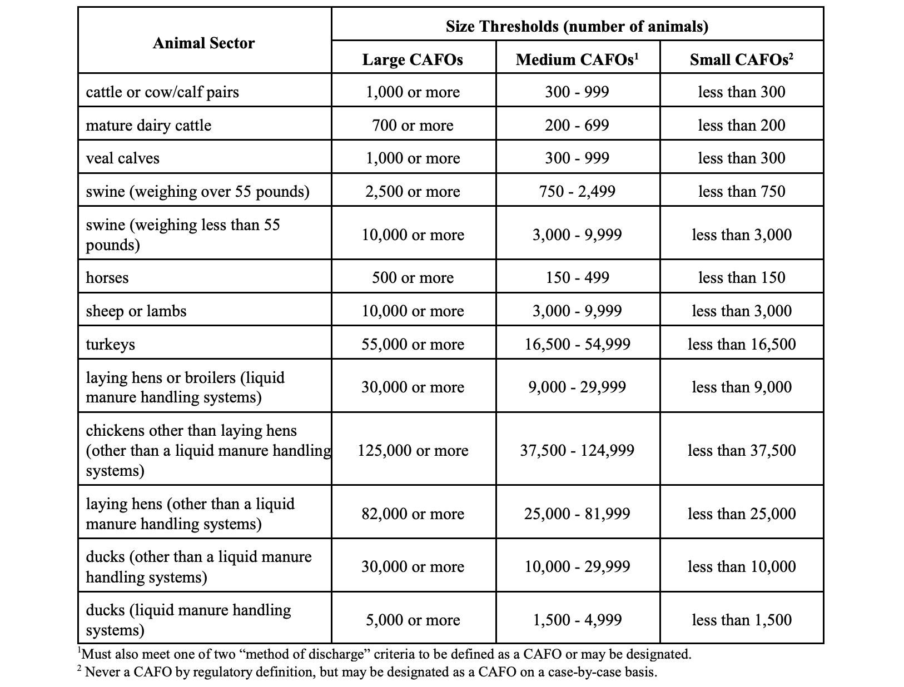
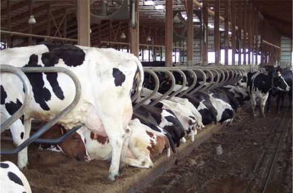
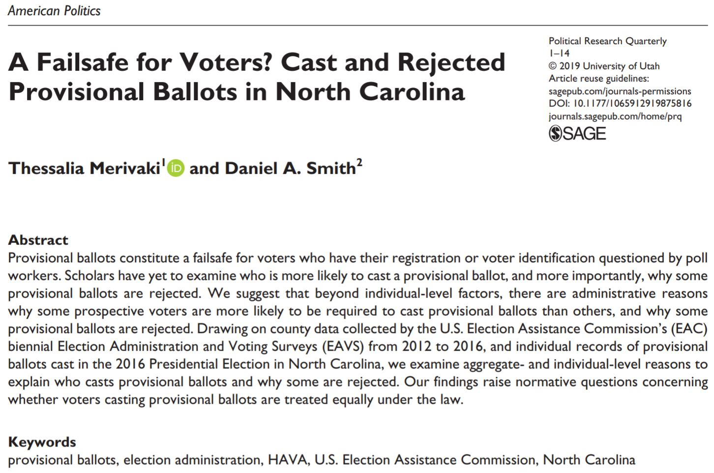
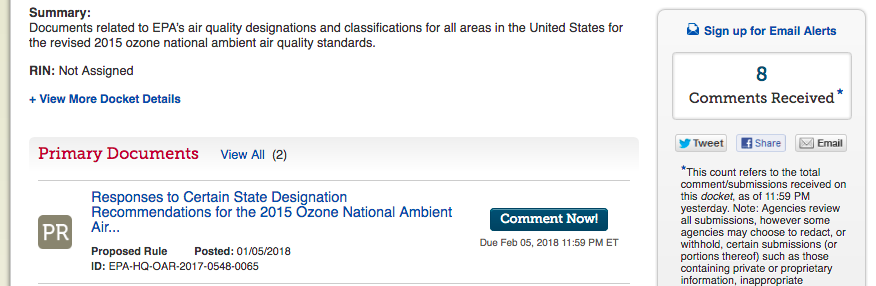

Policy Paradox, The Art of Political Decision Making
Part 4: Solutions (i.e., policy tools)
In Part 1, Stone introduced the idea that the metaphors we use to understand society, reasoning, and policymaking shape policy outputs and outcomes.
In part 2, Stone introduced five big “goals” (more like values) that motivate policy demands.
In part 3, Stone explored the social construction of “problems” through the perspectives we take, the stories we tell, and the symbols, metaphors, and definitions we use. By defining problems, stories and metaphors unite and divide potential interest groups, assign blame for problems, imply solutions, and shape how we think about policy decisions.
“Good” government
A good government implies two things: first, fidelity to the object of government, which is the happiness of the people; secondly, a knowledge of the means by which that object can be attained. - James Madison, Federalist No. 62 (1788)
“Object of government” = Policy goals
“The means by which that object can be attained” = policy instruments
Stone groups policy instruments into incentives, rules, information and persuasion, rights, and powers. You should be able to more or less map these onto the policy instruments described in Bardach Appendix B.
Incentives
Incentives
The idea behind incentives is simple: carrots and sticks…One uses the promise of rewards, the other the threat of penalties, but they both rely on getting other people to choose actions we would desire. - Stone, page 271
*I’d add that, to the extent we make policy to bind our future selves, we also commit ourselves to choose actions we desire.
Every reward contains an implicit or potential penalty of withdrawal, and every penalty short of death contains an implicit reward of cessation. - Stone, page 271
| Rationality Model | Polis Model | |
|---|---|---|
| Giver | Unified entity capable of consistent and rational decisions | Entity may have internal conflict and inconsistent decisionmaking |
| Target | Unified entity capable of consistent and rational decisions, will change current behavior for future rewards | Entity may have internal conflict and inconsistent decisionmaking, actors may have different timeframes and motives that change over time |
| Incentive | Meaning and value to target is clear | May have different meanings and values to the garget than the giver intends; may have symbolic meanings in conflict with material values |
| Rewards | The more rewards offered, the more behavior change | May create alliances between givers and targets–rewards may give targets power to get more rewards without behavior change |
| Sanctions | The more sanctions threatened, the more behavior change | May create conflict between givers and targets or harden the target’s resistance. May hurt people one is trying to protect instead of altering their behaviors |
Perverse incentives
Example: “Moral Hazard”
An analytic tool aimed at avoiding unintended consequences
Makes an unspoken assumption about human nature
How might making that assumption affect the policies one proposes?
Is that assumption more reasonable for targets or contexts than others?
Incentives can be demeaning
Compensation for local disamenities does not always increase the level of support.
Incentives tell citizens that the proper way to decide about public issues is to ask, “What’s in it for me?” An incentive scheme can change not only people’s way of behaving but their definitions of good character and good citizenship. - Stone, page 288
Rules
Social coordination by clarifying expectations for how people must act if they want governmental support
“No society could support the number of officials necessary to secure that every member of society was officially and separately informed of every act he was required to do” - H.L.A. Hart, The Concept of Law, page 21
A rule may
- mandate behavior
- confer powers
For example,
- rules for contracts, wills, and lawsuits.
- rules that agencies and local governments must follow to make policy
Why do we follow rules?
- sanctions
- legitimacy: perceived as good and right in how they distinguish like and unlike
Rules thus add important practical consequences to the abstract process of categorization. - Stone, page 292
Components of rules:
If [action + context], then [rule].
This is not as easy as it sounds!
What counts as “alike?” Likeness, as we have seen in the earlier discussions of equity, symbols, and numbers, is not a quality inherent in people and situations; likeness is a perception on the part of observers. To judge things as like or different requires selecting some features and ignoring others. To claim that things are alike is really to say that they ought to be treated alike for the purposes of achieving some end or because moral principles require treating them alike.
Rules classify actions and situations, creating consequences for each.
Thus, rules include, exclude, unite, and divide. For example,
- banks or polluters by size
- people by age or location
From The New York Times The Hardest Questions Doctors May Face: Who Will Be Saved? Who Won’t?
If hospitals withhold treatment by age, where do they draw the line?
Making rules
Focusing events inspire big promises.
- American Revolution\(\rightarrow\)U.S. Constitution
- Great Depression\(\rightarrow\)Social Security Act, New Deal
- Silent Spring\(\rightarrow\)DDT Ban, Environment Protection Agency
- Cuyahoga River fire\(\rightarrow\)Clean Water Act
- 9/11\(\rightarrow\)Patriot act, Dept. of Homeland Security
- Great Recession\(\rightarrow\)Dodd-Frank
- COVID\(\rightarrow\) CARES Act and American Rescue Plan (~40 x annual spend of the IRA)
But, legislators often avoid specifics that might anger any constituent group. Instead, they use
- constituency service
- logrolling
- symbolic legislation
- delegation of broad or ambiguous rulemaking authority
(On the first three, see Morris P. Fiorina Congress: Keystone of the Washington Establishment)
In making rules, delegation is the most important. Is the delegation of authority broad or narrow? How ambiguous is the authority? To whom is the authority delegated? Is that ambiguous? How are they likely to use this discretion?
Precise vs. vague rules
Precise rules \(\rightarrow\) no discretion
- aim to make bright lines, avoid ambiguity
- treat like things alike
- limits discrimination by officials
- predictable (protecting from ex post facto punishment)
- may be circumvented or become outdated
- symbolize the rule of law
Perfectly precise rules would require that “a legislator sit at every person’s side all through their life, prescribing the exact particulars of their duty.” - Plato
What is the most precise rule you can think of? Now, can you think of cases where it would be ambiguous or clearly undermine the intent?
Vague rules \(\rightarrow\) discretion
- allow sensitivity to context and individual differences
- allow officials to respond creatively to new situations
- allow for tacit knowledge: “I can’t define it, but I know it when I see it”–Justice Potter Stewart
- symbolize ideals and aspirations (think about the evolution of the 14th amendment)
See Michael Polanyi, Personal Knowledge
“The proper goal is to eliminate unnecessary discretionary power, not eliminate discretionary power.”–Kenneth Culp Davis, Discretionary Justice, p. 217
“necessary and proper for carrying into Execution the foregoing Powers, and all other Powers vested by this Constitution in the Government of the United States, or any Department or Officer thereof.”
“necessary” force?
Should police need to get a warrant before a search?
How much discretion should judges have in sentencing?
Do agencies have too much discretion in rulemaking?
“Neutral” rules?
“They refer to typical situations into which anyone may be and in which the existence of such rules will be useful for a great variety of purposes…They do not involve a choice between particular ends or particular people because we just cannot know beforehand by whom and in what way they will be used.” – Friedrich Hayek
Can you think of any examples?
Hayek’s example is traffic laws. Do traffic laws affect all people equally? Do they privilege some people at the expense of others?
“Positive” economics:
(“Positive” in the sense that it is about truth, not norms. Not “positive” vs. negative)
“Differences about economic policy among disinterested citizens derive predominantly from different predictions about the economic consequences of taking action–differences that in principle can be eliminated by the progress of positive economics”–Milton Friedman
What does it mean to be disinterested?
It means that we are a group of people who agree on the goal. When do we see this?
When, if ever, do we see policy actors behave disinterestedly?
Perfectly enforced rules?
Legal positivism
“nine-tenths, perhaps more, of the cases that come before a court are predetermined”–Benjamin Cardozo (a critic of legal positivism)
What does Cardozo mean?
To what extent should algorithms enforce laws?
For example:
- Three strikes laws
- mandatory minimums
- AI estimates of the likelihood of future criminal behavior
Is AI good or bad for law enforcement? (see the “risk score” sentencing debate)
We might also ask: What is the public interest? Who is innocent? What does it mean to uphold?
Algobias (bias in automated rules) is rarely conspiratorial; it is almost always rooted in how a decision tool is programmed to calculate the public interest, estimate future guilt or innocence, and mimic past decisions (which ends up reproducing inequities).
Darnell Gates complained that conversations with his probation officers were cold and impersonal. He didn’t realize that an algorithm had tagged him as high-risk until he was told about it during an interview with The New York Times. https://t.co/llxhOv8lv2
— NYT Business (@nytimesbusiness) February 9, 2020
Enforcement in practice
Rules of thumb
“If you limit your greed to a $1 Million Ponzi scheme, you aren’t going to get any flack from the SEC.”–Securities and Exchange Commissioner
Officials teach targets the rules of the game (Lapinski, Street-Level Bureaucracy).
- e.g., Public housing officials teach elderly or White applicants how to qualify for “emergency” housing.
Facts and Persuasion
“To be political, to be in a polis, meant that everything was decided through words and persuasion and not through force and violence”–Hannah Arendt
Science, evidence, logic, reason, rationality
vs.
Rhetoric, bias/loyalty, emotion/passion
“It is only in combination with particular, non-rational impulses that reason can determine what to do.” - Deborah Stone
Famous political economists
Which of these quotes best aligns with your views on political economy?
A: “Civil government, so far as it is instituted for the security of property, is in reality instituted for the defense of the rich against the poor, or of those who have some property against those who have none at all.” - Karl Marx
B: “Society does not consist of individuals but expresses the sum of interrelations, the relations within which these individuals stand…from the viewpoint of society, there is no difference between capitalists and workers.” - Adam Smith
Does who said it affect whether you find it persuasive?
IMPORTANT NOTE ABOUT THE ABOVE QUOTES: PLEASE READ AFTER RANKING THEM
Persuasion
How do we distinguish information and education from propaganda and indoctrination?
Are statements doubting human-caused climate change propaganda?
- always?
- never?
- sometimes?
I can see arguments for all three perspectives. If always, then climate science promotion must also be a kind of propaganda. Never is the argument that Lasswell and Kaplan offer: claims about facts are just out of the definition. Maybe the definition of propaganda requires criteria like intentional deception.
Is this propaganda?
Is this propaganda?
The power of suggestion
Voting in 1947
“The registrar registers any qualified person, black or white, if they insist. When a Negro applies, however, she tells them that they will be registered if they insist, but she gives them a quiet, maternal talk to the effect that the time has not yet come for Negros to register in the county. The people are not ready for it now, and it would only cause trouble.”–V.O. Key, Jr. Southern Politics
6 of 13,0000 eligible Black voters registered in this county
- The effect of voter ID laws is mostly “deterrent” effects (DeCrescenzo and Mayer)
- Telling a person they can’t vote once has lasting effects (Grimmer and Yoder)
How we decide
Logics of consequences: “What is the optimal action given the costs and benefits?”
Logics of appropriateness: “What does someone like me do in this context?”
– March and Olson Rediscovering Institutions
. . .
How might ideas of appropriateness change by 2050?
Principles vs. loyalties
To what extent do we revere the US Constitution due to rational analysis of its principles and policy solutions? To what extent is it simply loyalty?
Sometimes, loyalty overrules principles in policy decisions.
Johnson v. M’Intosh (1823)
- Johnson held a title from the local leaders of the Illinois (Illini) and Miami nations.
- M’Intosh later bought the same land from the US Federal Government.
The Supreme Court held that even though Lockean principles of property rights would uphold the earlier title, the Court of the United States could not uphold a principle of property over an actual title granted by the US Government because the court was a part of that government.
“Conquest gives a title which the court of the conqueror cannot deny”–Justice Marshall
See Carol Rose, “Possession as the Origin of Property” in Property and Persuasion, Essays on the History, Theory, and Rhetoric of Ownership
Johnson v. M’Intosh was also discussed in this Ted Talk on Indian Law.
Principles vs. policy and precedent
Sometimes, principles overrule policy and court precedent.
Brown v. Board of Education (1954) reversed Plessy v. Ferguson (1896), overruling the “separate but equal” precedent and striking down segregation policies.
Rights
Positive rights vs. normative rights
Positive: actions you can take where the government has stated that it will back you up
Normative: moral claims based on something other than the law (religious texts, theories of natural law, or philosophy)
“We hold these truths to be self-evident: that all men (sic) are created equal, that they are endowed by their Creator with certain unalienable Rights.”
Normative rights claims often provide the moral and, thus, a political force to get positive rights written into law.
The idea of rights has probably been the most powerful source of political change in modern history.
The system of rights depends crucially on citizens’ willingness to bring their grievances to government.
Judges, too, rely on normative visions for resolving disputes and appeal to moral ideals in their written decisions. Moral values are like the forces of gravity, pulling and pushing on all sides of a rights dispute, as well as on judges’ reasoning. - Stone, page 340
When judges are about to depart from precedent, either to create new rights and duties or to restrict old ones, they often justify the decision (and prepare the audience) with rhetoric about changed social conditions. - Stone, page 341
Stone’s discussion of re-interpretations of the Voting Rights Act
(pages 342-344)
Each of these Voting Rights Act decisions redefined the rights of black citizens and the obligations of federal and state governments. Each did so by invoking a picture of society, and each Court could have rendered a different decision by painting a different picture. - Stone, page 344
Like American civil rights law, international human rights law grains most of its leverage through its normative visions and through indirect, long-term mechanisms. Rights discourse creates new norms of what it means to be a good government and a “normal” state…They signal what norms domestic elites must hold in order to gain respect in the international community. - Stone, page 352-353
Limits to rights
Rights generally don’t work as the magic wand portrayed in the myth of rights. Court decisions do not produce social change overnight. But when seen in the wider sense of rights discourse as well as litigation, rights can be transformative. - Stone, page 348
Brown changed the moral climate of race and politics in the United States. It could do that, according to Paul Finkelman, because it wasn’t a direct assault on the distribution of political and economic power as a decision about voting rights would have been. - Stone, page 349
Test cases
Because the identity of disputants matters a great deal for who wins and who loses, organizations and advocates craft “test cases” to challenge a rule or policy; they seek out plaintiffs with a high potential to win. The ideal plaintiff has a factual situation that seems to compel the desired legal outcome and personal attributes that make for a strong case in the court of public opinion as well as the courthouse. - Stone, page 347
Procedural vs. substantive rights
Realizing substantive rights often requires procedural rights such as a grievance process that can provide some kind of legal remedy to those claiming substantive rights.
Definitions and labels
Definitions and labels in a policy determine rights because different policies apply to different categories of actors.
Q: What is a confined animal feeding operation?
A: It’s complicated. According to the EPA:
Notice footnote 2!
My neighbor’s dairy (with 1000 cows) qualifies:
My neighbor’s pig farm (with 1000 juvenile pigs) does not qualify:
)
Thus, the dairy required a permit for its waste and qualified for a subsidy program to generate electricity from methane. Cool! The pig farm did not require a permit, so the pig manure flows through my backyard.
However, I also have a negative right to not have my well contaminated (but only if it is very clear who is at fault).
In this case, it was clear who was at fault, but instead of complaining to the DNR or suing our neighbor (available grievance processes), we worked out a neighborly hand-shake agreement where he paid for a new well.
Rights often work like this—instead of people constantly going to court, the existence of the right leads to conforming behavior.
Rights must be backed up by the threat of force
Finally, in order for rights to work as a policy instrument, there must be an enforcement mechanism. With incentives and rules, the primary responsibility for monitoring behavior lies with the government (or rulemaker). In practice, law enforcement and regulatory agencies rely heavily on citizen complaints to obtain information about rule violations, but we would consider a police department remiss if it did nothing to stop crime other than answer the telephone. With rights, by contrast, the primary responsibility for monitoring lies with the right-holders. The model of rights assumes that any violations will be discovered by right-holders themselves as they are harmed. Stone, page 338
Q: What is affordable housing?
Does it matter?
Q: What is terrorism?
Does it matter?
Does the symbolic power of the label “terrorism” translate to policy response?
By FBI policy, acts of “terrorism” in the US are moved to the top of the priority list and allocated more resources than other crimes.
But in Germany, the label ‘terrorism’ does not affect the policy response. With a different context and different policies, the label has a different level of import.
Because of the importance of the label in the US, it becomes a subject of political conflict. For example, the FBI created a new label (“black identity extremists”), presumably in an attempt to label racial justice protesters as terrorists.
Powers
(rules about who gets to decide and how)
“Powers” is my shorthand for policy about the structure of decisionmaking institutions. To make policy, governments need authority to act (make policy decisions), and they need the capacity to act (carry out policy decisions.) - Stone, page 354
If “political goals” are about accruing power and “policy goals” are about statements about what government intends to do, it is nearly impossible to distinguish these goals in policy decisions about the distribution of powers to make policy decisions because every such decision redistributes power.
Policy decisions about the distribution of resources like healthcare impact the distribution of power, but it is less direct. In principle, one could be opposed to universal healthcare as policy but vote for it in order to get re-elected (or vice versa).
Redistributing policymaking authority, however, always directly redistributes power.
Who governs?
Constitutional and institutional design
Power conferring rules
- Confer legal powers on individuals, organizations, or public bodies to “create structures of rights and duties within the coercive framework of the law”–H. L. A. Hart, The Concept of Law
Change the membership in the decision-making body
- The criteria
- The size of the body
- The locus of authority
Formal criteria for membership in the electorate
property ownership,race,gender, age, residence, registration, nationality, naturalization, criminal convictions
As we saw with women winning the right to vote and black Americans losing the right to vote when white southerners ended reconstruction, a policy that allows more or fewer people to vote affects who wins elections (who accomplishes their political goals) and what kinds of policy they make (who accomplishes their policy goals). Because election law is about who gets to make decisions, policy choices often have a policy rationale (certain people should or should not be permitted to vote) and political rationale (certain decision-makers will gain power, and others will lose it).
Informal criteria for membership in the electorate
- Tuesday work schedule
- care work (childcare, eldercare) responsibilities
- spare time x wait times in one’s district
- distance from polling place x access to transportation
- social capital
- health
- who is targeted by voter intimidation, misinformation, etc.
For example, research shows that who casts a provisional ballot depends on informal factors.
Membership in public service
Formal rules:
- election rules, appointment rules, removal rules
- descriptive representation, substantive representation, accountability
Informal criteria:
- Ability to raise money, social capital, who is targeted by election violence
“Arguments about voter qualifications and systems of representation are strategies to change the distribution of power in policymaking.” - Stone
Size of decisionmaking bodies
Smaller decisionmaking bodies
- Better or worse policy substance? (James Sundquist and David Davis, Making Federalism Work)
- Better or worse policy processes? e.g., more opportunities for participation and deliberation (Jane Mansbridge, Beyond Adversary Democracy)
“Arguments about size are strategies to empower some people at the expense of others.” - Stone
Location of decisionmaking
Geography
“Horizontal” division of powers across units such as counties, states, or countries.
What legal jurisdiction(s) are you in?
Federalism
“Vertical” division of powers across levels of government
- The delegation, preemption, enumerated powers, reserved powers, state and tribal sovereignty
- Centralization vs. decentralization
Individual, group, local, state, federal, global, intergalactic?
“Arguments about allocating authority among different units within a nation are strategies to redistribute power and resources among competing interests” - Stone
How do we govern?
Much is at stake in decisions about how to decide policy questions.
Losing interests will try to change the policy process.
- “Venue shopping” (Baumgartner and Jones, Agendas and Instability)
- “Conflict expansion” (E.E. Schattschneider, The Semi-sovereign People)
Reflection
- How has your understanding of the politics of policymaking changed this semester?
- Which reading stands out to you most and why?
- What connections do you see between the memos and the readings?
Process: voice and accountability
Voice (e.g., opportunities to comment on proposed policies) 
Accountability (e.g., mandatory responses to public comments)

Process: veto points
- Protecting against the “tyranny of the majority” (James Madison, Federalist 10)
- Create status quo bias
Examples:
- The Senate’s cloture rule
- Executive veto
- Office of Management and Budget (OMB)
- Judicial Review
Rules governing rulemaking
Notice and Comment Rulemaking vs. less formal agency “guidance” process
- Agencies propose bills to Congress and delay rule publication when they think the rule may be overturned (Potter, Bending the Rules)
But
- Agencies don’t seem to strategically use guidance instead of notice and comment rulemaking (Walters, The Self-Delegation False Alarm)
- Courts don’t seem to be less likely to strike down policy made through notice-and-comment rulemaking (Judge-Lord, Why Do Courts Defer to Agency Judgement?)
BUT
- Insider lobbyists anticipate having larger influence in more informal (e.g., guidance) policy processes (Yackee, Hidden Politics: Interest Group Influence during US Regulatory Policymaking)
Who regulates runoff from farms?
- The US Department of Agriculture
- The Environmental Protection Agency
- The Michigan Department of Agriculture
- The Michigan Department of Environment, Great Lakes, and Energy - State of Michigan
Who makes the rules? Who enforces the rules? Why?